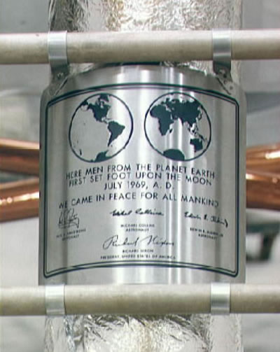

En 2019 : 50 ans depuis le premier pas Sur la lune
Mission.
Le 16 juillet 1969, vers 14h, la capsule spatiale "Apollo XI" est partie de Cap Kennedy, au sommet d'une fusée Saturn V de 115 m de haut & de 3000 tonnes.
"Apollo XI" doit, pour la première fois dans l'histoire humaine, amener des hommes sur la lune. Le 19 Juillet, "Apollo XI" s'est stabilisé avec son équipage composé de Neil Armstrong, Edwin Aldrin et Michael Collins autour de la Lune. Après une vérification des installations techniques, la séparation du module d'exploration lunaire (que l'on apellera plus tard LEM) s'effectue le 20 Juillet, emportant Armstrong et Aldrin vers leur objectif, Collins restant seul aux commandes d' "Apollo XI" en orbite autour de la Lune.
La sortie se prépare. Le premier homme à poser le pied sur la lune, Neil Armstrong, accomplit le geste historique le 21 Juillet vers 4h du matin et prononce sa phrase devenue célèbre depuis : "C'est un petit pas pour l'homme, un bond de géant pour l'Humanité"
Aldrin le suit quelques minutes plus tard. Les deux astronautes resteront en tout 22 heures sur la Lune, dont environ 2 à l'extérieur du LEM. Des images sont transmises en direct de la Lune à la Terre : on estime que 500 millions de téléspectateurs assistent de par le monde aux retransmissions, comme lors de l'envol d' "Apollo XI". Le programme de travail des astronautes sur le sol Lunaire comprend la mise en place de certains dispositifs scientifiques (mesure du vent solaire), ainsi qu'une série d'exercices de mouvement sur un sol avec peu de gravité.
Le départ de la Lune a lieu le soir du 21, avec l'allumage de la fusée de l'étage du LEM servant de retour. Le module s'arrime à la capsule mère "Columbia" 3h30 plus tard environ, les deux "hommes de la Lune", Armstrong et Aldrin, rejoignant Collins.
Le lendemain "Apollo XI", après le largage de l'étage du LEM, rallume ses moteurs et entame sa route vers la Terre. Le 24/07 à 17h51, la capsule touche le Pacifique dans la zone prévue : la première expédition humaine sur la Lune s'achève sur un succès flamboyant.
Cette Plaque, laissée sur la lune, rend hommage au premier alunissage humain, l'on peut y voir marqué "C'est ici que des êtres humains de la planète Terre posèrent pour la première fois le pied sur la Lune, en 1969 après J-C. Nous sommes venus en paix pour toute l'Humanité. Neil A. Armstrong, astronaute, Edwin E. Aldrin, astronaute, Michael Collins, astronaute, Richard Nixon, Président des Etats-Unis d'Amérique".